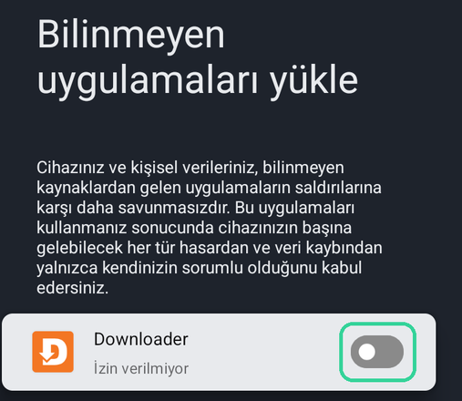
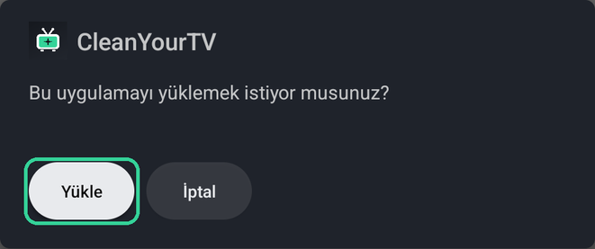
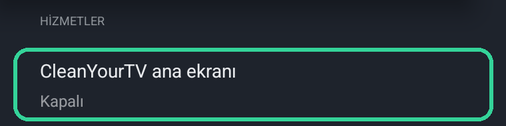
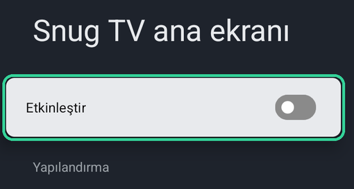
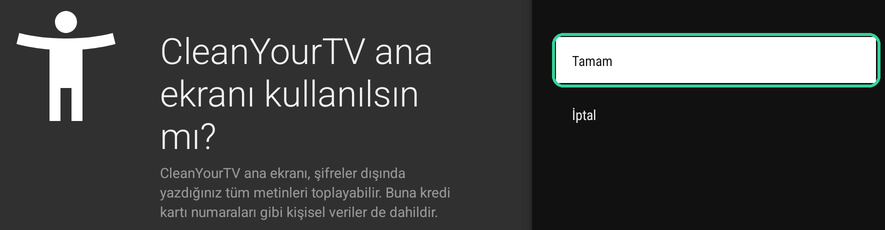

Snug TV'yi indir
Android TV ve Google TV için reklamsız, sade ana ekran.
Ana ekran, Gathin ve katkıcılarının geliştirdiği CleanYourTV başlatıcısıdır. Snug TV onu tek APK olarak paketleyen gayriresmi bir fork'tur.
Tek dosya, her Android TV ve Google TV için:
APK'yı indirTV'de Downloader uygulamasına bu adresi yaz:
Kurulum
Beş adım, kumanda yeterli.
- APK'yı TV'ye aktar. Üç yoldan biri yeter:
- Downloader: TV'de Google Play'den Downloader uygulamasını kur, yukarıdaki adresi yaz ve Load'a bas.
- Telefondan: Telefona ve TV'ye Send files to TV uygulamasını kur. İkisi aynı Wi-Fi'da olsun. Dosyayı telefondan gönder, TV'de aç.
- USB bellek: APK'yı belleğe kopyala, TV'ye tak ve bir dosya yöneticisiyle (ör. File Commander) aç.
- Bilinmeyen kaynaklara izin ver. TV, dosyayı açan uygulama için izin ister. Ayarlar'a bas ve o uygulamanın düğmesini aç, sonra geri dön.
Elle açmak için: Ayarlar › Gizlilik › Güvenlik ve kısıtlamalar › Bilinmeyen kaynaklar.

Bu listede Snug TV değil, APK dosyasını açan uygulama görünür (burada Downloader). İzni ona veriyorsun. - Kurulum penceresinde imleç önce İptal'dedir. Kumandada bir kez sola bas, Yükle'yi seç ve bas. Bitince Bitti'ye bas.

- Snug TV'yi ana ekran yap. Kumandada Home'a bas.
- Hangi ana ekranın kullanılacağını sorarsa (çoğu Android TV): Snug TV'yi seç ve Her zaman'a bas. Bu kadar.
- Sormazsa (Google TV): Ayarlar › Sistem › Erişilebilirlik'e gir, en alttaki Hizmetler bölümünde Snug TV ana ekranı'na gir.

Etkinleştir'i aç.

Çıkan pencerede Tamam'a bas.

Bu, her erişilebilirlik yardımcısında çıkan standart uyarıdır. Snug TV yalnızca Home tuşunu izler, internete bağlanmaz. Listede bir de Snug TV giriş tuşu var. O başka bir yardımcıdır, ana ekran için onu açma.
- Home'a bas. Snug TV gelmeli. Google TV'de önce kendi ekranı bir an görünür, sonra Snug TV gelir; bu kısa geçiş normaldir.
Google TV'de kurulum olmazsa
Yeni Google TV'lerde Google'ın iki güvenlik kuralı dosyadan kurulumu zorlaştırabilir:
- Play Protect “Uygulama, cihazınızı korumak için engellendi” deyip kurulumu durdurabilir.
- Kurulsa bile Etkinleştir düğmesi açılıp hemen kendiliğinden kapanabilir (Android'in “kısıtlanmış ayar” kuralı). Google TV menülerinde bunu açacak bir seçenek yok.
Bu durumda Snug TV'yi bir bilgisayardan ADB ile kurmak gerekir (adb install snug-tv-3.5-umut.3.apk). Dosyadan kurulduysa ve Etkinleştir kapanıyorsa, bilgisayardan şu komut düğmeyi açılır hale getirir: adb shell appops set io.github.umutluprens.tvhome ACCESS_RESTRICTED_SETTINGS allow. ADB bağlantısını kurmak için CleanYourTV'nin rehberindeki adımlar işe yarar. Klasik Android TV'ler (Mi Box, Sony, Philips gibi) bu kurallardan etkilenmez.
Bilmen gerekenler
- Ana ekranın görünümü değişir, reklam ve öneri satırları gider. Uygulamalarına, Cast'e ve kumandaya dokunulmaz.
- Sesli arama çalışır. “YouTube'da … aç” gibi isteklerin sonuçları Google TV'nin kendi ekranında açılır. Home'a basınca Snug TV'ye dönersin.
- TV'yi tek başına hızlandırmaz. Stok ana ekran arka planda çalışmaya devam eder. Gerçek hızlanma için gereksiz uygulamaları bilgisayardan kapatmak gerekir.
- Bazı TV'ler üçüncü parti ana ekranı kabul etmez (ör. bazı Çin pazarı TCL yazılımları).
- Daha önce CleanYourTV adıyla (3.5-umut.2) kurduysan: Snug TV yeni bir uygulama olarak kurulur. Önce Erişilebilirlik'te CleanYourTV ana ekranı'nı kapat, sonra eski uygulamayı kaldır. Kutu sıralaması bir kez sıfırlanır.
Geri alma
- Google TV'de Ayarlar › Sistem › Erişilebilirlik › Snug TV ana ekranı'nı kapat. Android TV'de Ayarlar › Uygulamalar › Varsayılan uygulamalar › Ana ekran uygulaması'ndan eski ana ekranı seç.
- Ayarlar › Uygulamalar › Snug TV › Kaldır. Home tuşu hemen eski ana ekrana döner.
Dosyayı doğrulamak istersen
APK'nın SHA-256 değeri:
İmza sertifikası SHA-256 (her güncellemede aynı kalır):f4f929d751cf22237ec89b43af7303f6ae2e665ebefb5f4e53c4efcc91a7e3ac
Güncelleme çıktığında aynı düğmeden indirip üzerine kurman yeterli. Ayarların ve erişilebilirlik izni korunur.